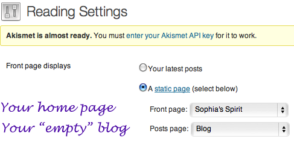

From Smashing Magazine
Create a home page. Create a page titled "Blog" but don't give it any content. Then fill-out this form.

A solution some people use is a combination of CloudFlare, Bad Behavior, and Akismet or Antispam Bee. I will be trying just CloudFlare and Antispam Bee on Sophia's Spirit.
If you want to change the default size of the header image, change these two lines in functions.php.
define( 'HEADER_IMAGE_WIDTH', apply_filters( 'twentyeleven_header_image_width', 1000 ) ); define( 'HEADER_IMAGE_HEIGHT', apply_filters( 'twentyeleven_header_image_height', 288 ) );
Convert a regular post to a “sticky post” by doing a “quick edit” on it and then choosing sticky post; or do a regular (full) edit and then click the Visibility link to reveal the stick post option.
The process for moving a WordPress site from one web hosting company to another can be achieved by simply moving all the PHP and image files, the database, then a find/replace on the domain name. The detailed steps are listed here.